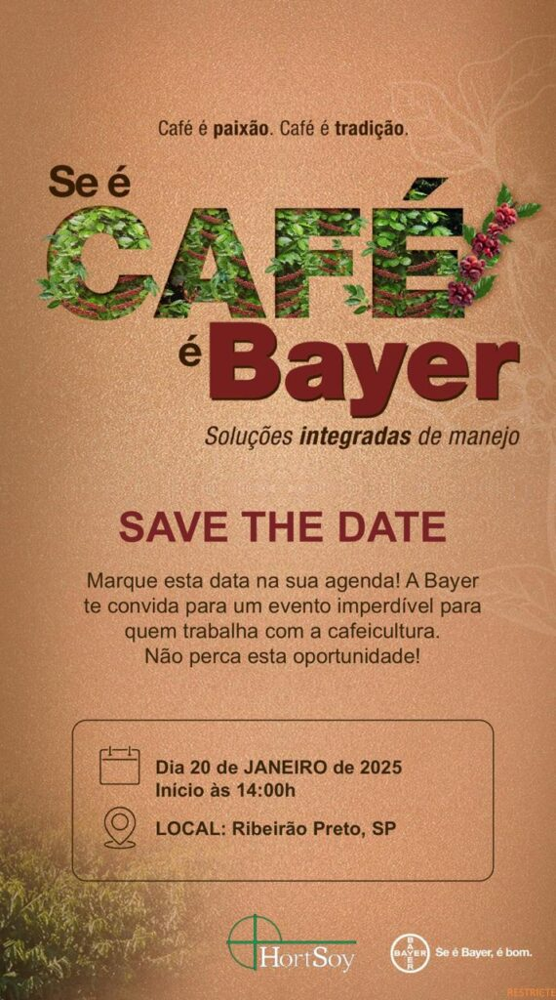
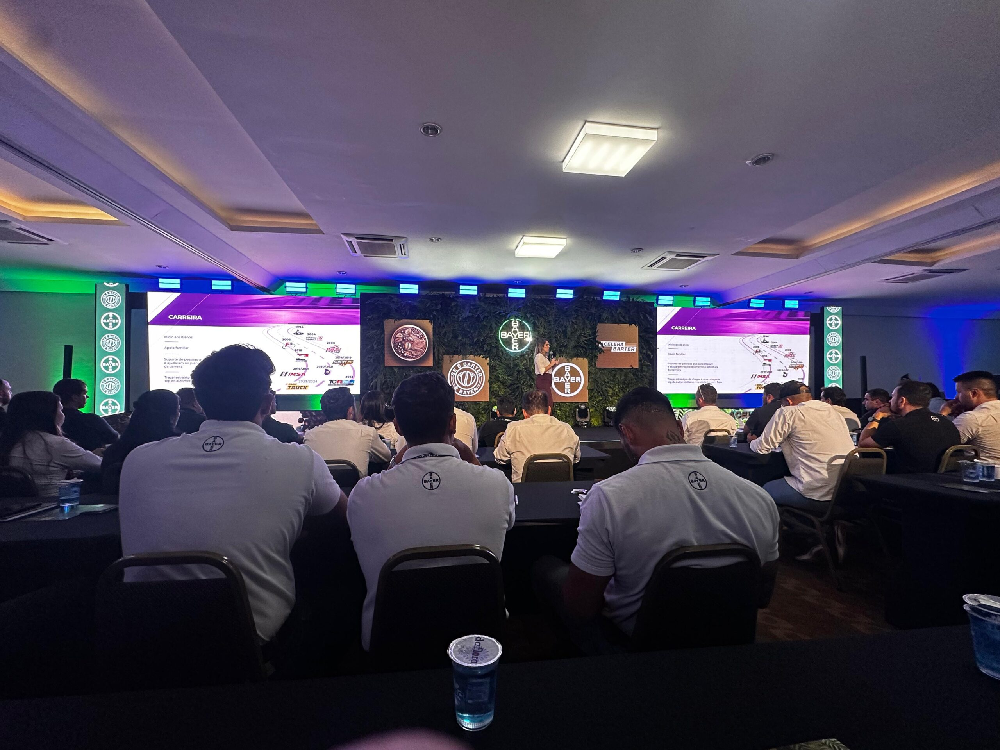

HortSoy Marca Presença no Evento Barter Café 25/26 da Bayer

HortSoy Fortalece Estratégia no Barter Café 25/26
No dia 20 de janeiro de 2025, Ribeirão Preto/SP foi palco de um evento exclusivo promovido pela Bayer: o Barter Café 25/26. A iniciativa reuniu os times da Cultura do Café de diversos canais para uma imersão estratégica voltada para o novo ciclo.

Com presença forte e compromisso estratégico, a HortSoy impulsiona o futuro da cultura do café!
A HortSoy se destacou pela presença maciça de todos os seus consultores e lideranças, demonstrando o forte compromisso da empresa com este segmento tão relevante para o agronegócio. A expectativa em torno do evento era grande, pois representava um marco significativo no planejamento e execução das estratégias para o novo ciclo cafeeiro.

Fortalecendo nossa estratégia, alinhamos equipes e traçamos ações assertivas para impulsionar a cultura do café no campo!
O principal objetivo do encontro foi impulsionar a orientação estratégica para a cultura do café, garantindo que todos os envolvidos estivessem completamente alinhados e preparados para atuar de maneira assertiva no campo. O evento proporcionou insights valiosos, promovendo discussões aprofundadas e alinhamentos essenciais para a implementação das iniciativas previstas.
Acompanharemos de perto os desdobramentos e inovações que este ciclo trará para a cultura do café, sempre buscando a melhor performance para nossos parceiros e clientes.
O saldo do evento foi extremamente positivo. A equipe HortSoy saiu motivada e confiante na execução das estratégias traçadas, reforçando o compromisso da empresa em atender com excelência os produtores de café. O foco claro no cliente e nas necessidades do mercado continua sendo a diretriz principal da HortSoy para o sucesso nesta jornada.